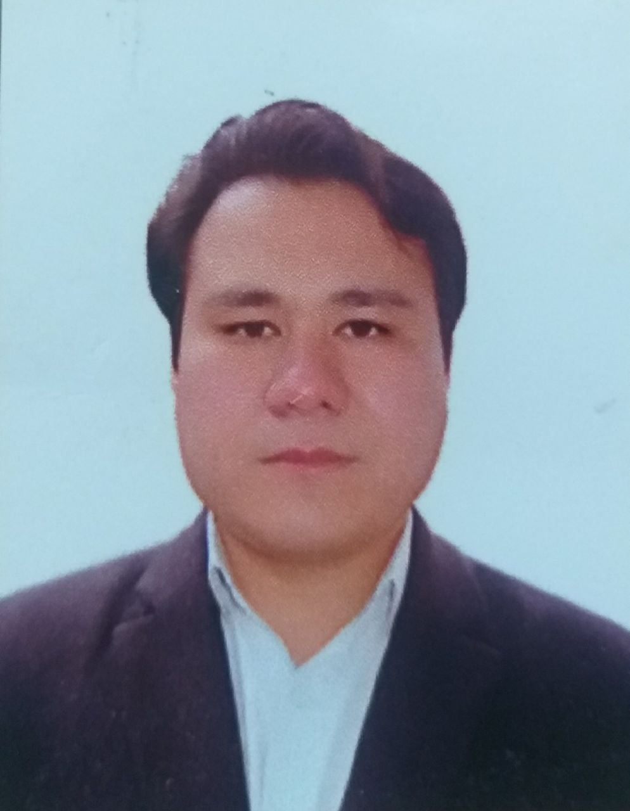
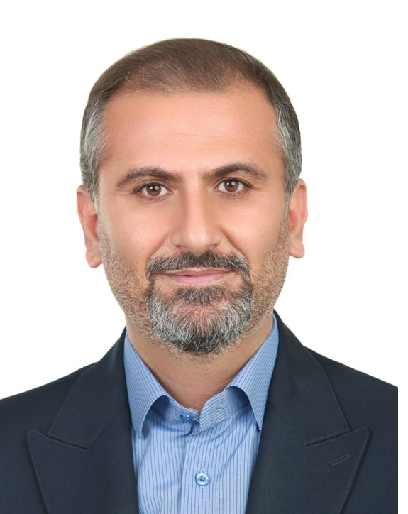
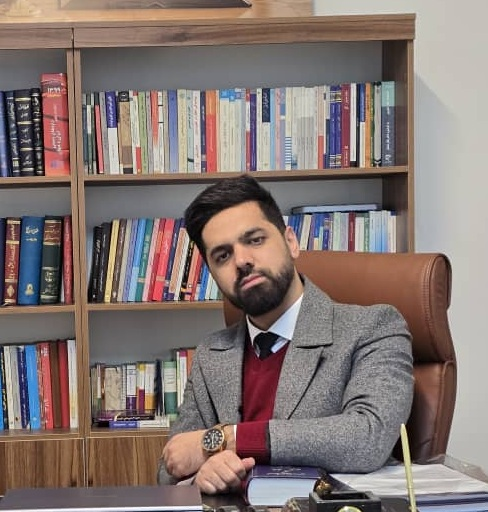

Collaborative expertise
A Multidisciplinary Advisory Network
Maddahinasab Legal Advisory collaborates with a carefully selected network of professionals across legal, policy, technical, commercial, and regional domains. Depending on the nature of a project, sectoral requirements, and jurisdictional needs, external specialists may be engaged to contribute expertise in regulatory analysis, sector-specific assessment, due diligence, institutional mapping, and strategic advisory.
This flexible expert network model enables the delivery of context-sensitive and interdisciplinary analysis for investors, businesses, institutions, and organizations navigating legally complex and politically transitional environments.
Areas of Expertise
- Foreign investment and market entry strategy
- Transitional legal and regulatory risk assessment
- Institutional and governance analysis
- Energy law, oil & gas, and renewable energy regulation
- Public policy and regulatory governance
- Commercial risk and legal due diligence
- Sanctions-related legal and market considerations
- Regional political and economic analysis
Expert Profiles
Replace the photo path, name, title, and bio text in each card below when you are ready.

Mojtaba Ahmadi
Copper Industry / Technical and Commercial Expert
Over a decade of professional experience in Iran's copper industry as commercial manager and project manager. He is also advisor to the Director General of Industry, Mine and Trade of Southern Kerman Province, Iran.

Abdollah Taqaddusi
Public Law, Mining Law & Institutional Governance / Afghanistan Expert
Abdollah Taqaddusi is an Attorney at Law in Kabul. He served as advisor to Afghanistan's Ministry of Labor and Social Affairs and as Cultural Advisor at the Consulate General in Mashhad. He now provides legal and structural risk assessments for foreign investors, especially in critical minerals, working with government institutions, international organizations, and civil society.

Hossein Hajiani
Constitution Law, Administrative and Municipal Law / Public Law Expert
Dr. Hossein Hajiani holds a PhD in Public Law from University of Tehran. He has extensive work experience in governmental organizations in Iran such as Administrative Court of Justice. He is currently Attorney at Law and member of the Bar Association of Tehran, Iran

Expert 04
Specialty / Title
Replace this text with the full bio for Expert 04.

Meysam Saidi nezhad
Competition Law, Start-Ups, Licensing & Regulatory Compliance / Private Law and Tech Law Expert
Mr. Meysam Saidi Nezhad is an Attorney at Law and member of the Tehran Bar Association.He currently serves as Legal Counsel to Snapp Group, one of Iran’s leading tech companies. He worked at Iran's National Competition Center and served as Head of the Competition Law & Property Group from 2021 to 2023. His background provides strong expertise, in key sectors such as automotive and telecommunications.

Sara Famoori
Foreign Investment, International Trade & Customs and Digital Law / International Law Expert
Dr Sara Famoori holds a PhD in Public International Law from the University of Tehran. She is a top researcher expert in digital law and foreign investment. She also serves as the Chairwoman of the Board of Hakim Parsi Sarzamin Salamat (Ltd.Co) a company active in the field of pharmaceutical herbs and medical products.

Expert 07
Specialty / Title
Replace this text with the full bio for Expert 07.
Expert 08
Specialty / Title
Replace this text with the full bio for Expert 08.

Delnia Najafian
Petroleum Law and Renewable Energy and Infrastructure & Construction Law / Energy Law Expert
Dr. Delnia Najafian holds PhD in Oil and Gas Law from University of Tehran. She is a remarkable researcher. She is a lecturer at the University of Kurdistan. She has work as legal expert at Kayson INC, a leading EPC contractor company in Iran. She is currently Attorney at Law and member of the Bar Association of Tehran, Iran.
Collaboration Model
The expert network operates on a project-based and needs-oriented structure. Team composition varies depending on the legal sector, investment profile, regulatory environment, and institutional complexity involved in each engagement.
This model ensures access to specialized knowledge while maintaining flexibility, discretion, and tailored strategic support for each client or research initiative.
Interested in Collaboration?
We welcome collaboration with academics, legal practitioners, policy experts, economists, regional specialists, and technical consultants whose expertise complements our advisory and research work.
Contact Us